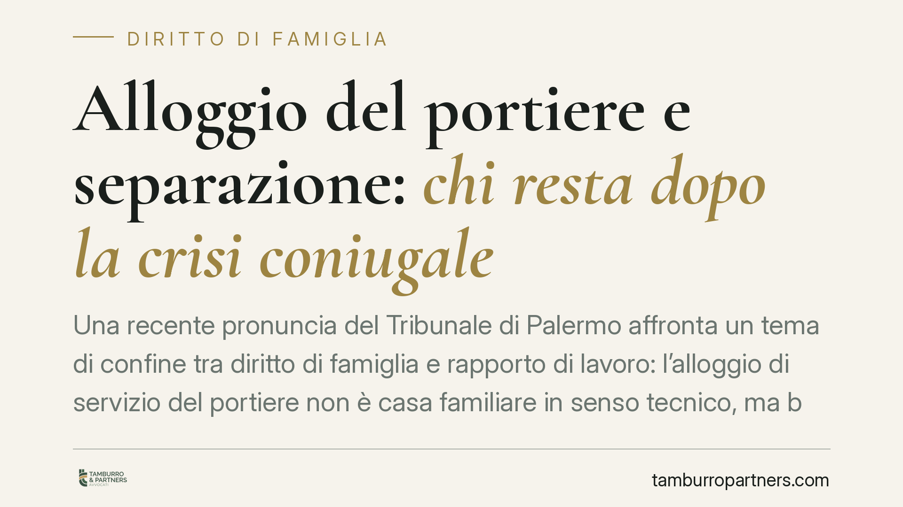

Alloggio del portiere e separazione: chi resta dopo la crisi coniugale
Una recente pronuncia del Tribunale di Palermo affronta un tema di confine tra diritto di famiglia e rapporto di lavoro: l'alloggio di servizio del portiere non è casa familiare in senso tecnico, ma bene legato al contratto. Alla separazione, in assenza di assegnazione, l'ex coniuge deve rilasciarlo. Vediamo perché e quali tutele restano.

Il caso
Secondo quanto riferito dalla stampa specializzata, il Tribunale di Palermo (sentenza n. 3296/2026, di cui restano da verificare gli estremi ufficiali) ha stabilito che l'ex coniuge del portiere è tenuto a lasciare l'alloggio di servizio condominiale. La ragione è tecnica: quel bene non è casa familiare, ma pertinenza del rapporto di lavoro.
Precisiamo subito il punto metodologico: fino alla verifica del testo integrale della decisione, il principio va letto come orientamento e non come regola consolidata. La ratio, tuttavia, poggia su categorie civilistiche note.
Inquadramento normativo
L'art. 337-sexies del Codice civile disciplina l'assegnazione della casa familiare in sede di separazione o divorzio. Il giudice può assegnarla al genitore con cui vivono i figli, tenendo conto del loro interesse. Presupposto è che si tratti di *casa familiare*: l'abitazione dove il nucleo si è stabilmente organizzato e che appartiene, a titolo di proprietà o godimento, a uno dei coniugi o a entrambi.
L'alloggio del portiere ha natura diversa. È un bene concesso in godimento dal condominio in funzione del rapporto di portierato: il diritto di abitarlo nasce dal contratto di lavoro, non dalla vita familiare. Cessato o estraneo quel rapporto, viene meno il titolo. Per questo l'alloggio di servizio non rientra tra i beni assegnabili ex art. 337-sexies c.c.: manca la disponibilità del coniuge sul bene.
Il conflitto con la tutela dei figli
È legittimo chiedersi se l'interesse dei minori (artt. 337-ter e 337-sexies c.c.) possa comunque giustificare la permanenza. La risposta prevalente è negativa, per una ragione strutturale: il giudice della famiglia può assegnare solo un bene di cui il coniuge abbia disponibilità giuridica. L'alloggio è del condominio, che è terzo rispetto alla crisi coniugale e non può vedersi sottratto un bene destinato al servizio.
La tutela dei figli non scompare, ma cambia strumento. Resta ferma la disciplina dell'affidamento, del collocamento e, soprattutto, del contributo al mantenimento (art. 337-ter c.c.): il giudice può quantificare l'assegno anche considerando il maggior costo abitativo che il genitore collocatario dovrà sostenere una volta lasciato l'alloggio.
Tempi di rilascio e ruolo del CCNL
Un dato pratico spesso trascurato riguarda i tempi. Il CCNL per i dipendenti da proprietari di fabbricati (portieri) prevede che, alla cessazione del rapporto di lavoro, il lavoratore debba rilasciare l'alloggio di servizio entro un termine determinato — nell'ordine di alcuni mesi dalla fine del rapporto. Si tratta però di un termine che riguarda il portiere, titolare del contratto.
L'ex coniuge, invece, non ha un titolo autonomo: non è parte del rapporto di lavoro e non è assegnatario. La sua permanenza, dopo l'allontanamento del portiere, è priva di fondamento giuridico. Da qui la legittimazione del portiere ad agire in via personale per la restituzione del bene: è lui il destinatario del godimento e può recuperarne la piena disponibilità.
Implicazioni pratiche per i destinatari
Per il portiere. Conserva il diritto di godimento finché dura il rapporto di lavoro. Può agire per il rilascio nei confronti dell'ex coniuge che occupi l'alloggio senza titolo, con azione personale di restituzione.
Per l'ex coniuge. Non può contare sull'assegnazione della casa familiare per restare nell'alloggio. Deve programmare per tempo una nuova sistemazione e può far valere la propria condizione economica in sede di determinazione del mantenimento.
Per il condominio. Ha interesse a mantenere l'alloggio libero da occupanti estranei al servizio. Può sollecitare il rilascio e monitorare che il bene resti destinato alla sua funzione.
Cosa fare in concreto
- Verificate la natura del titolo abitativo: distinguete con precisione casa familiare da alloggio di servizio, perché le tutele sono diverse.
- Recuperate la documentazione: contratto di portierato, regolamento condominiale, delibere sull'alloggio, eventuali provvedimenti di separazione.
- Non confondete i piani: la crisi coniugale non incide sul titolo lavoristico del bene.
- Anticipate i tempi: se è prevedibile un rilascio, valutate per tempo soluzioni abitative alternative e i riflessi sul mantenimento.
- Prima di avviare o resistere a un'azione di rilascio, è opportuna una valutazione preventiva del titolo e delle scadenze contrattuali.
Disclaimer
Contributo informativo a cura di Tamburro & Partners Avvocati - Avv. Giuseppe Tamburro. Non costituisce parere legale.
Ogni famiglia ha il suo equilibrio.
Separazione, divorzio, affidamento, assegno: se vuoi un confronto riservato su una specifica situazione, scrivi allo studio. Ti rispondiamo entro un giorno lavorativo.